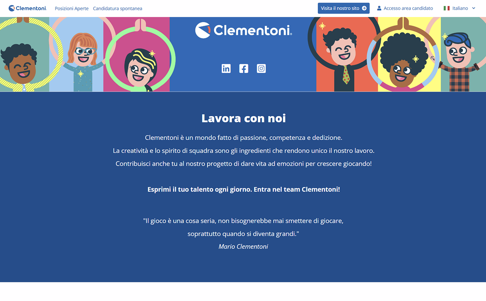
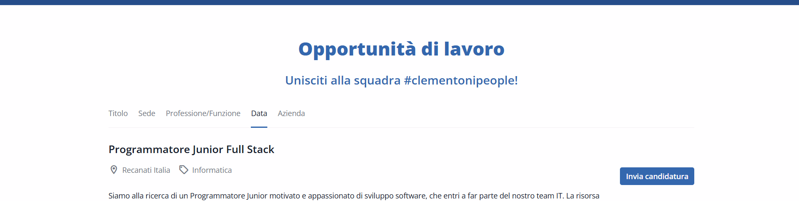
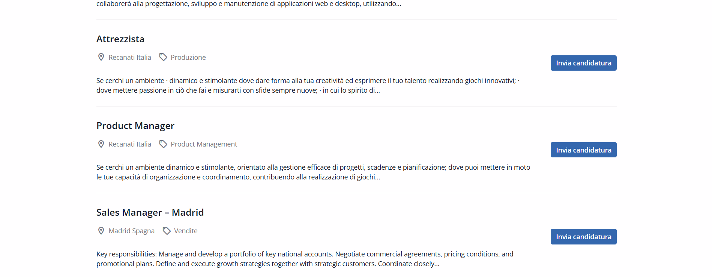
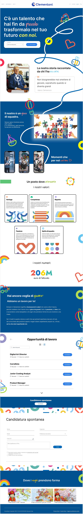

01
Contesto
Il progetto ha riguardato il redesign della sezione “Lavora con noi” del sito Clementoni, con l’obiettivo di riorganizzare i contenuti e migliorare l’esperienza dei potenziali candidati.
UX/UI Redesign · Website · 2025
Ripensare la sezione “Lavora con noi” per renderla più chiara, coinvolgente e orientata alla talent attraction.

Overview
01
Il progetto ha riguardato il redesign della sezione “Lavora con noi” del sito Clementoni, con l’obiettivo di riorganizzare i contenuti e migliorare l’esperienza dei potenziali candidati.
02
Rafforzare la talent attraction, comunicando in modo più efficace opportunità di carriera, cultura aziendale e valori del brand.
03
Trasformare una sezione prevalentemente informativa in un’esperienza più autentica e coinvolgente, mantenendo chiarezza e coerenza con l’identità Clementoni.
01 · Research
La ricerca è stata concentrata sull’analisi delle career page e sulle aspettative degli utenti, con l’obiettivo di individuare contenuti e informazioni realmente rilevanti.
01
Analisi di career page di competitor e aziende di altri settori per individuare best practice relative a struttura, tono di voce ed esperienza utente.
02
Raccolta di dati quantitativi su aspettative, interessi e comportamenti degli utenti durante la visita di una sezione “Lavora con noi”.
03
interviste
Interviste qualitative utili a comprendere bisogni, motivazioni e pain point dei candidati.
02 · Key insights
Gli insight sono stati definiti a partire dal benchmarking e dall’analisi dell’esperienza esistente.
Una career page non dovrebbe limitarsi a mostrare le posizioni aperte. Valori, ambiente di lavoro e identità dell’azienda aiutano il candidato a capire se esiste una reale affinità con il brand.
Inserire una search bar direttamente nella hero permette all’utente di iniziare subito la ricerca di un’opportunità, riducendo i passaggi e rendendo più chiaro l’obiettivo della pagina.
Immagini, testimonianze e contenuti legati alla vita aziendale rendono l’esperienza più autentica rispetto a una comunicazione esclusivamente istituzionale.
Il passaggio dalla scoperta dell’azienda alla ricerca delle posizioni aperte deve essere lineare, con call to action evidenti e pochi passaggi intermedi.
03 · User Persona
A partire dalle esigenze individuate durante l’analisi, ho definito un profilo rappresentativo del potenziale candidato, utile a guidare le successive scelte progettuali.
User Persona
Roberto sta cercando la sua prima opportunità professionale in un’azienda nella quale possa crescere e riconoscersi. Prima di candidarsi vuole capire rapidamente quali posizioni sono disponibili, conoscere l’ambiente di lavoro e comprendere i valori e la cultura dell’azienda.

User Journey
La user journey evidenzia i principali momenti dell’esperienza di Roberto: dalla scoperta dell’azienda alla ricerca di una posizione compatibile, fino alla decisione di candidarsi.

04 · Prima / Dopo
Il redesign ha lavorato sui principali punti critici della career page, migliorando accesso alle opportunità, chiarezza dei contenuti e percorso verso la candidatura.
Prima



Dopo

Scelte progettuali
La nuova hero parla direttamente al candidato, collegando talento, infanzia e crescita professionale in modo coerente con l’identità Clementoni. La search bar permette inoltre di cercare subito le opportunità tramite keyword.
Storia e cultura Clementoni acquistano maggiore spazio, affiancate da Employee-Generated Content: testimonianze e contenuti dei dipendenti rendono il racconto dell’azienda più autentico e vicino ai candidati.
I valori e l’impegno dell’azienda vengono comunicati in modo più esplicito, aiutando il candidato a valutarne l’affinità con i propri principi. Brevi animazioni valorizzano inoltre i numeri chiave e la dimensione di Clementoni.
Le posizioni aperte sono raccolte in un elenco consultabile, con la possibilità di salvarle tra i preferiti o candidarsi. Se nessuna posizione corrisponde al proprio profilo, rimane disponibile la candidatura spontanea.
05 · Learnings
Sicuramente un lavoro più breve rispetto ad altri case study, ma utile per lavorare sul rapporto tra identità di marca, bisogni dell’utente e comunicazione employer-oriented.
Ripensare una career page non significa soltanto riorganizzare le informazioni. Linguaggio, immagini e interazioni possono trasmettere l’identità del brand anche durante la ricerca di un’opportunità lavorativa.
Integrare testimonianze e contenuti provenienti dai dipendenti permette di raccontare la cultura aziendale in modo più autentico rispetto a una comunicazione esclusivamente istituzionale.
La presenza di una search bar già nella hero consente al candidato di cercare subito le opportunità disponibili, rendendo l’esperienza più immediata e orientata all’azione.
Scrivimi per collaborazioni, opportunità o per parlare di design, prodotto e comunicazione.
Contattami ora